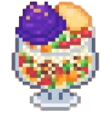

Halo-Halo
Ingredients
- 1 cup shaved or crushed ice
- 1/4 cup sweetened jackfruit (langka), chopped
- 1/4 cup sweetened red beans (kidney beans or mung beans)
- 1/4 cup sweetened banana (saba), sliced
- 1/4 cup nata de coco (coconut gel)
- 1/4 cup kaong (sugar palm fruit)
- 1/4 cup ube halaya (purple yam jam) or ube ice cream
- 1/4 cup leche flan (caramel custard), sliced
- 1/4 cup evaporated milk
- 1-2 scoops of ube ice cream (optional)
- Pinch of pinipig (toasted rice flakes) for garnish (optional)
Instructions
- Prepare the ingredients: If you're using canned or jarred ingredients like sweetened jackfruit, sweetened red beans, nata de coco, or kaong, drain them and set them aside. If you have fresh or homemade ube halaya, have it ready, or scoop out some ube ice cream as a substitute.
- Layer the ingredients: In a large glass or dessert bowl, start by layering the sweetened jackfruit, red beans, banana slices, nata de coco, and kaong at the bottom.
- Add the shaved ice: Place the crushed or shaved ice on top of the layered fruits and beans until the glass is full, about 3/4 of the way.
- Add the leche flan: Place slices of leche flan on top of the ice.
- Top with ube: Add a generous spoonful of ube halaya (purple yam jam) or a scoop of ube ice cream on top of the shaved ice.
- Pour the milk: Pour evaporated milk over the entire dessert for that creamy texture.
- Garnish: Optionally, garnish with pinipig (toasted rice flakes) or any additional toppings of your choice like a scoop of ice cream.
- Serve and enjoy: Mix everything together and enjoy the colorful, sweet, and refreshing flavors of Halo-Halo!
Enjoy your refreshing Halo-Halo, a Filipino classic perfect for any warm day!